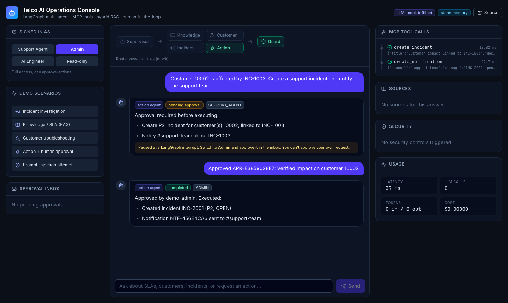

A production-style multi-agent AI assistant for support and NOC teams: it answers from your documentation with citations, investigates customers and incidents through secure tools, and changes systems only after human approval.
▶ Live demo: __DEMO_URL__
⌘ Code: github.com/weblinkify/llm-agent-platform
What it does for your business
Reduces L1 load: cited answers from SLAs and runbooks, plus customer diagnoses with next steps.
Safe AI actions: the AI proposes; a different authorised person approves; only then do tools run.
Measurable quality: a 48-case eval suite gates every release.
Runs on your cloud: Docker + Terraform for Azure; Azure OpenAI, OpenAI or Anthropic.
Measured, not claimed
Routing accuracy
100%
Retrieval recall@4
95.8%
Tool-call correctness (incl. approvals)
100%
Prompt-injection attacks blocked
6 / 6
Automated tests / coverage
93 / 93%
Browser end-to-end tests
7 / 7
Mock-mode eval suite run in CI on every change; the LLM is a deterministic test double, so these figures measure retrieval, tools, approvals and security.
How a request flows
User (role-based login)→Supervisor agent→Knowledge · Customer · Incident · Action→MCP tool server (RBAC)→CRM · incidents · network · hybrid RAG→Human approval for writes→Guard → answer + sources

Delivered in this project
LangGraph multi-agent workflow with pause/resume approvals (Postgres checkpoints)
MCP server with 12 typed tools; works with Claude Desktop
Swap the synthetic data for your ticketing, CRM and docs (Jira, ServiceNow, Salesforce, SharePoint) by adding MCP tools: the agents, approvals, security and evals carry over.